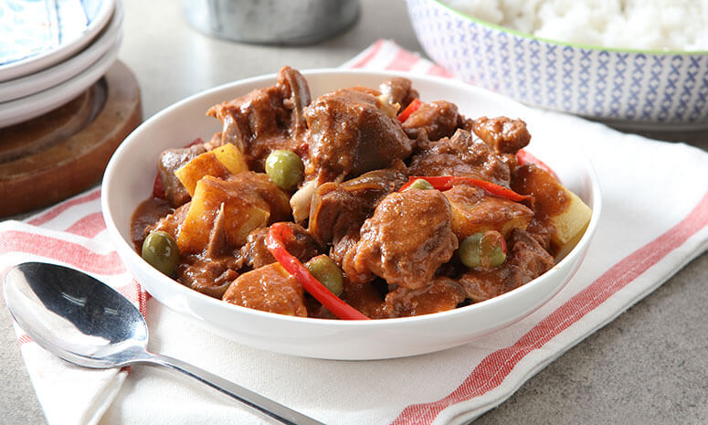

Kalderetang Kambing Recipe

Here's a quick 'n easy way to make this local dish!
Preparation Time: 10 mins.
Cooking Time: 1 hr and 41 mins.
Total Time: 1 hr 51 mins.
Ingredients
- 750 g goat meat, cut into chunks
- 2 Tbsp DEL MONTE Red Cane Vinegar
- 1 cup water
- 2 Tbsp oil
- 2 Tbsp liver spread
- 2 pc siling labuyo, sliced
- 1/4 cup red wine
- 1 cup water
- 1 pouch DEL MONTE Quick 'n Easy Caldereta Sauce (80g)
- 1/4 cup green olives, stuffed
- 1 cup bell pepper, red, cut into strips
- 1 Tbsp cheese, grated
- 150 g potato, cut into chunks and fried
Instructions
- Marinate goat meat in DEL MONTE Red Cane Vinegar for 30 minutes. Drain and discard marinade. Boil meat in water, drain and discard broth.
- Sauté meat in oil until slightly dry, then add liver spread and sili. Sauté for 2 minutes.
- Add red wine, water, and DEL MONTE Quick 'n Easy Caldereta Sauce. Bring to boil then turn down to simmer uncovered for 5 minutes, then cover and continue simmering until meat is tender.
- Add olives, bell peppers, and cheese. Simmer for 5 minutes. Stir in fried potatoes.